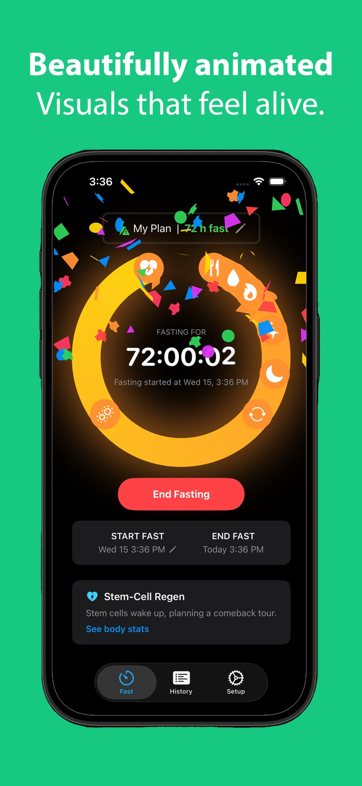
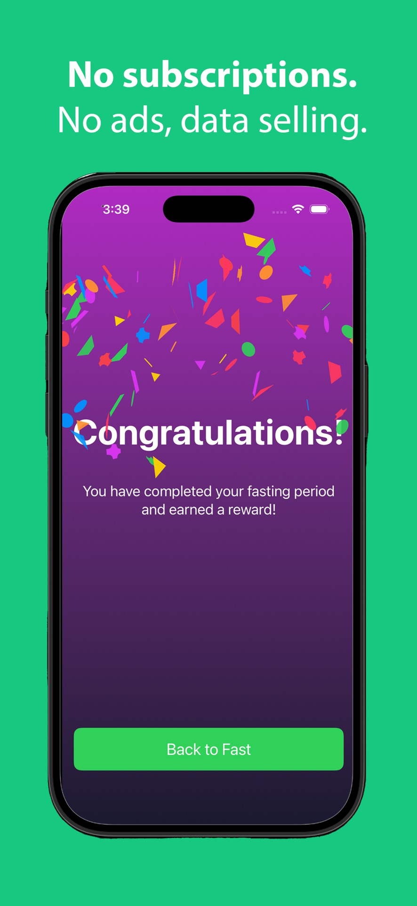

A clear sense of progress
See elapsed time, remaining time, and your goal in one simple timer.
Everyday App Store
AllyFast
A focused fasting timer, a clear view of your progress, and a history that stays with you.
iPhone & iPad


See elapsed time, remaining time, and your goal in one simple timer.
Review and edit your completed fasts, with a calendar view of your records.
Import and export your fasting history as a local JSON file.